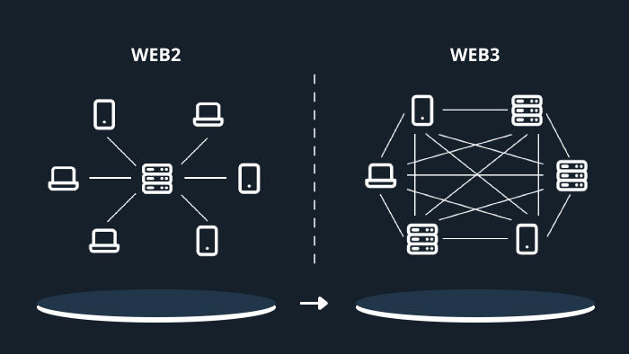

Web 3.0
Definition: Web 3.0, also known as the Semantic Web, is the next evolution of the internet that aims to create a more intelligent and interconnected web. It focuses on enabling machines to understand and interpret data in a way that allows for more personalized and context-aware experiences for users.
How it works: Web 3.0 utilizes technologies such as artificial intelligence, machine learning, and natural language processing to enable machines to understand and interpret data on the web. It also incorporates decentralized technologies like blockchain to enhance security and privacy. Web 3.0 aims to create a more personalized and interactive web experience by allowing users to have more control over their data and enabling seamless interactions between different applications and services.
Examples: Some examples of Web 3.0 applications include decentralized social media platforms, blockchain-based applications, and AI-powered virtual assistants. These applications leverage the capabilities of Web 3.0 to provide users with more personalized and secure online experiences. Web 3.0 has the potential to revolutionize the way we interact with the web, enabling a more intelligent and interconnected online ecosystem that empowers users and fosters innovation.
